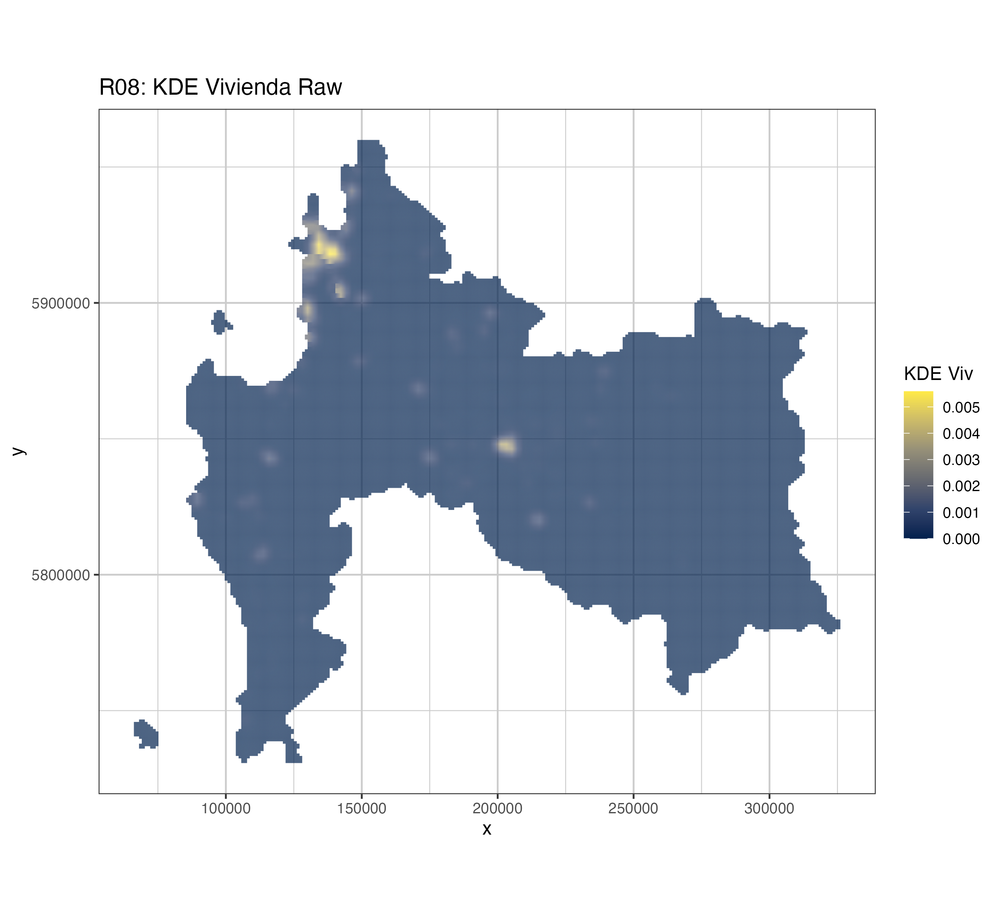
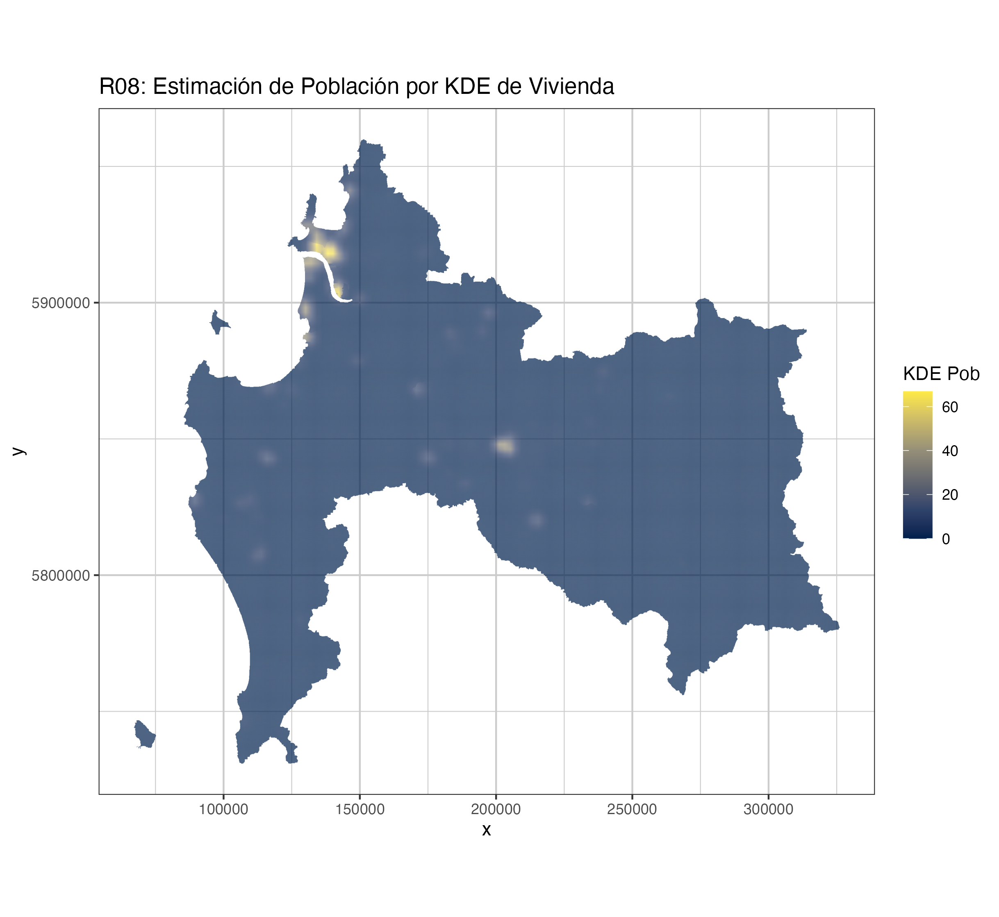

5 Población Urbana Rural
Datos Censales
5.1 Introducción
PAra los efectos de la siguiente explicación de procesamiento de información se definirà como área de estudio la región de Bío Bío, y en términos generales se define como el proceso de asignación de población urbano-rurarl por densidad de viviendas, para tener una metodología homogada para los análisis del presente estudio.
Para obtener la información de viviendas localidades reurales se utilizó como la base de viviendas rurales provenientes del Precenso 2016, mientras que para el caso de viviendas rurales se utilizó la información resultado del Censo 2017 ambas bases correspodientes al Instituto Nacional de Estadísticas,.
La metodología imputación de población por cantidad de viviendas en la región, se realizará siguiendo los siguientes pasos:
- Imputar información administrativa a viviendas rurales
- Muestreo aleatorio de viviendas urbanas dentro de cada manzanas
- Kernel Desnsity Estimation (KDE) de Viviendas Rurales
- Imputar La población a las celdas del KDE
A continuación se explican los detalles y resultados por cada tipo de procesamiento:
5.2 Imputar información administrativa a viviendas rurales
5.3 Muestreo aleatorio de viviendas urbanas dentro de cada manzanas
5.3.1 Cálculo
En el tapa de cálculo de la estimación de densidad por kernel de población se utilizarán los puntos que representan las viviendas con la variable asociada de población promedio por unidad territorial. A conuación se describen los pasos realidos:
- Definción de Región de Estudio
- Creación de Ventana de Trabajo
- Cálculo de puntos pro ventanan de trabajo
- Análisis de densidad ponderada por población
- Transformación a resultados espaciales tipo raster
TODO: Detallar cada paso.
5.3.2 Resultados

5.4 d. Imputar La población a las celdas del KDE
Considerando que los valores resultantes del kernel density estimation corresponden a resultados de densidad de viviendas ponderadas por población, estos resultados fueron ponderados por población comunal, para poder tener los valores asosciados en magnitud a personas controlados por los totales comunales.
